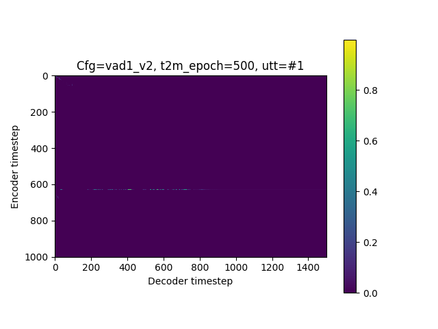
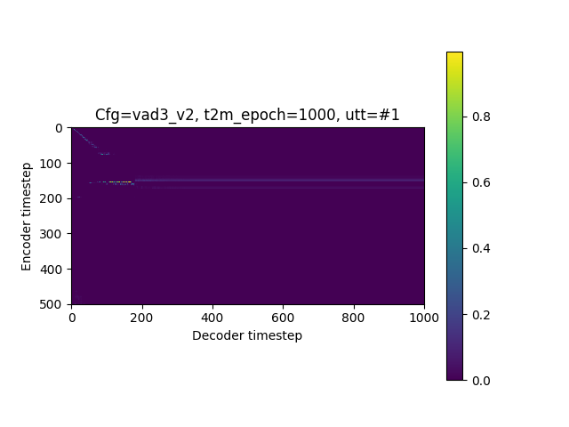
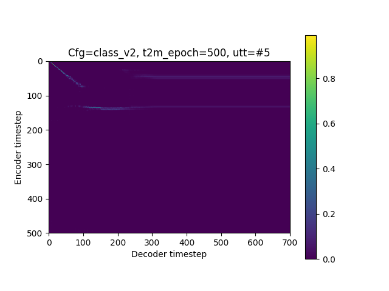
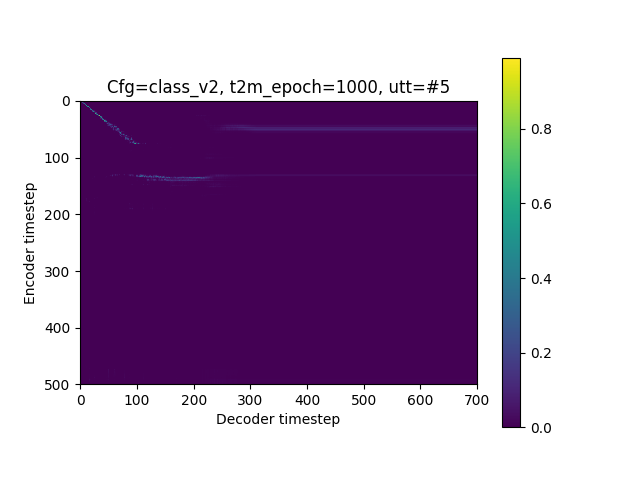
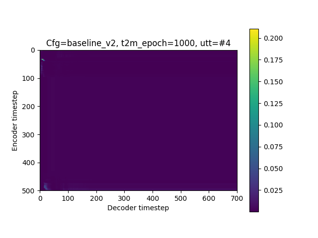
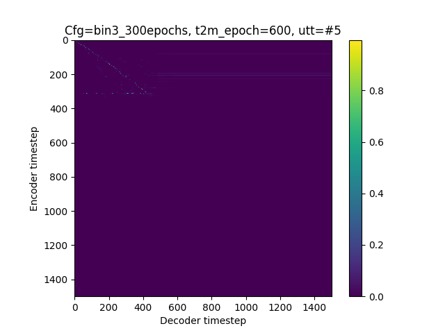
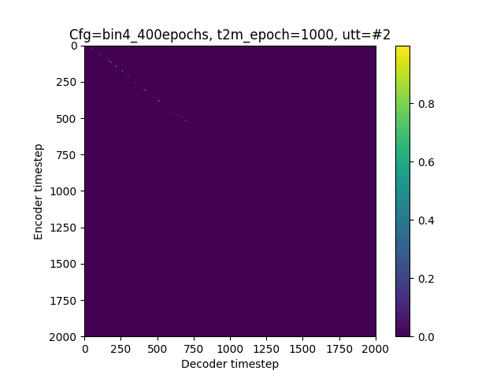

Experiments
Part A: EFFECT OF DIFFERENT SEQUENCE LENGTHS
We implemented different segmentations methods either based on audio or text to obtain datasets with different
sequence length distributions and trained S2SA TTS models. Next we show training alignments for the failed models
described in Table 1. All sentences are different.
(1) and (2) VAD 1 and 3: we used a Voice Activity Detector (VAD) available on https://github.com/wiseman/py-webrtcvad, with level 1 and 3 of aggressiveness.
(3) NLTK grammar: we segmented the text using NLTK to find roughly sentences comprised of a noun phrase and a verb up to the start of the next noun phrase. The noun phrase was defined by fine-tuning on a portion of the IBM data.
(4) Binary classifier: we trained a one layer feed forward classifier on Pytorch trained on 0.25 s mel segments (5 ms frames) of final and non-final audio on external data.
(5) Baseline: we arbitrarily cut the text randomly into sentences from 5 to 15 words, within paragraphs segmented by period.
The experiments that found first audio timing were aligned with the text to match the end of the word close to the timings detected.
(1) and (2) VAD 1 and 3: we used a Voice Activity Detector (VAD) available on https://github.com/wiseman/py-webrtcvad, with level 1 and 3 of aggressiveness.
(3) NLTK grammar: we segmented the text using NLTK to find roughly sentences comprised of a noun phrase and a verb up to the start of the next noun phrase. The noun phrase was defined by fine-tuning on a portion of the IBM data.
(4) Binary classifier: we trained a one layer feed forward classifier on Pytorch trained on 0.25 s mel segments (5 ms frames) of final and non-final audio on external data.
(5) Baseline: we arbitrarily cut the text randomly into sentences from 5 to 15 words, within paragraphs segmented by period.
The experiments that found first audio timing were aligned with the text to match the end of the word close to the timings detected.
| VAD-1 epoch 500 | VAD-1 epoch 1000 | |
|---|---|---|
|  |
| VAD-3 epoch 500 | VAD-3 epoch 1000 | |
|---|---|---|
|  |
| Binary classifier epoch 500 | Binary classifier epoch 1000 | |
|---|---|---|
|  |  |
| Baseline epoch 500 | Baseline classifier epoch 1000 | |
|---|---|---|
|  |
Analysis: we can see for VAD-1 and VAD-3 that attention changed from epoch
500 to 1000 (on the top left corner), showing that an alignment was starting to take form. This might mean that
if trained for longer, these models might eventually learn a proper alignment. On the other hand, the binary
classifier seemed to have learnt a good alignment at the start but it fades out up to the end, while the
baseline shows an alignment for a very short sentence which seems quite strong. It seems then that the
learning of the attention is not indifferent to the chunking method used and to how clean the chunking was
(for example, in a mistmatch between audio and text, words that might have been cutted at the beginning or end)
These are samples for the failed models in Table 2. We can see that for the classifier and baseline models
some words can be recognized and at some portions a bit of structure, while the VAD models are clearly
generating random speech-like sounds. All these samples were synthesized using the code for speaker "DJ",
which only the baseline models seems to have learnt speaker characteristics. All sentences are different.
| VAD-1 | VAD-3 | |
|---|---|---|
| Classifier | Baseline | |
|---|---|---|
Part B: SYNTHESIZING LONG SEQUENCES
These are training alignments for the combined model described in Table 3. The alignment of first
phase is not shown as it's almost unnoticeable. All sentences are different.
| Phase 1 | Phase 2 | Phase 3 | |
|---|---|---|---|
|  |  |
We synthesized a very long paragraph with the combined system and the NLTK system.
Paragraph text:
"think that western liberal democracies are more specifically obligated to developing countries and their citizens because they often are partially responsible for their circumstances. Like Like america literally created isis when they shipped off weapons to like rebel groups in iran, and the britons the brits literally destroyed african independence by redrawing the borders and just kind of colonizing all over the place. Same Same with india. When When states cause the problems of others, we think they have an obligation to assist with the consequences given that they caused them. We We think that taking in those affected by their actions is an effective way to do so, and like possibly one of the best ways in so far as you are saving lives without like with minimum expenditure on yourself. Like Like we think a really important thing in this round is that states aren't actually harmed by taking in more immigrants. Like Like sure, there are arguments about why it might be difficult for your welfare system but all of these things even out over time. Like Like we had many studies that have shown that immigrants, when integrated, actually become very productive members of society, and give birth to children that become very productive members of society. Our Our second of clash has to do with the arbitrary nature of citizenship. Because Because even if you think that obligations occur first to your citizens, we don't think that applies if the way by which people can be citizens is arbitrary and there is no like fixed standard by which we measure."
| Grammar model | Combined model |
|---|
Next we highlight some interesting behaviour observed when comparing the two paragraphs.
1. The scheduled model "respects" punctuation unlike the grammar based model, in the sentence:
"colonizing all over the place. Same Same with india. When When states cause the problems of others"
| Grammar based | Scheduled based |
|---|
2. Both models add perceivable boundaries at places where there is not punctuation in the text, in similar
places
"best ways so far as you are saving lives without like with minimum expenditure on yourself. Like"
| Grammar based | Scheduled based |
|---|
3. Both models keep emphasis, and at similar locations
"Because Because even if you think that obligations occur first to your citizens"
| Grammar based | Scheduled based |
|---|